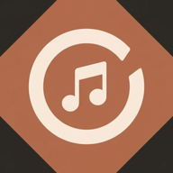
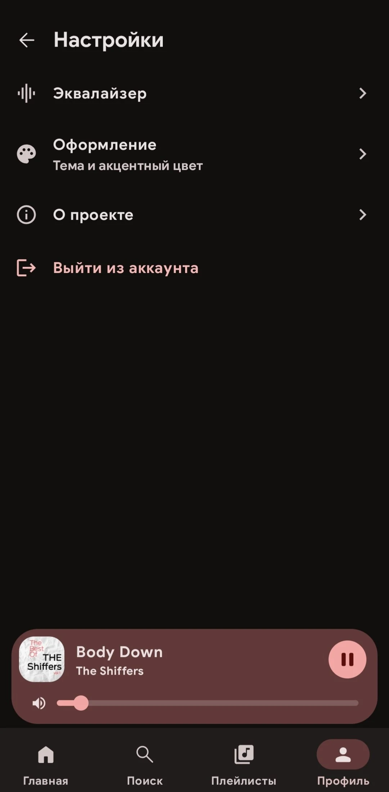

Моя волна
Один тап на главном экране запускает бесконечный поток. Характер, настроение и язык настраиваются в пару касаний.

ExMusic TelegramНативное приложение для Android: ваша коллекция, «Моя волна», эквалайзер и оформление под ваш цвет. Это не патч официального клиента.
Один тап на главном экране запускает бесконечный поток. Характер, настроение и язык настраиваются в пару касаний.
«Любимое», плейлисты и поиск по трекам, исполнителям и альбомам. Страницы артистов и альбомов с переходом к играющему треку.
Полосы частот и готовые пресеты.
Создавайте, переименовывайте и удаляйте плейлисты, добавляйте в них треки прямо из поиска.
Уведомление, экран блокировки и выбор устройства вывода звука.
Папка «С устройства» в плейлистах открывает музыку с вашего телефона, а в поиске она выводится отдельной группой. Доступ к аудио приложение просит при первом заходе, а отключить функцию можно в настройках: «Офлайн-режим».
Светлая, тёмная или системная тема и свой акцентный цвет.
